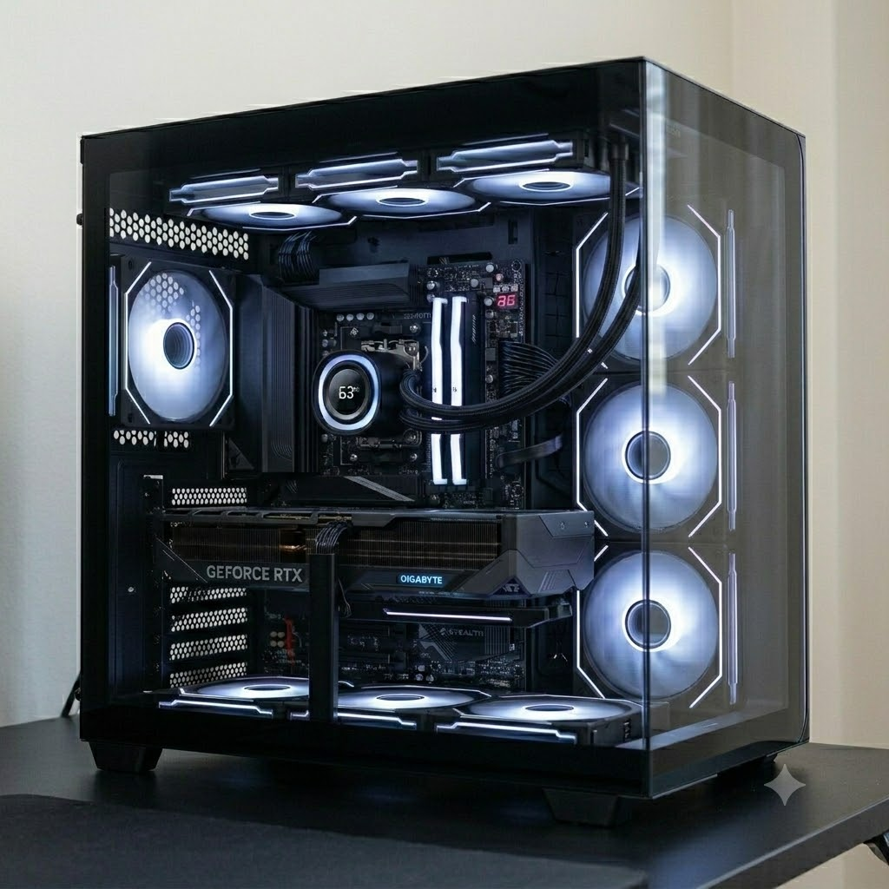

12400 + RTX 4060 Ti
升級至 R7 7700 + RTX 5070 Ti 分析
重點式拆解各零件、1080p 遊戲、AI 生圖與多工能力——快速看完、抓到結論。

1.各零件分析
CPU
Ryzen 7 7700
- 8C16T，比 12400 多 2 核心
- 多工/AI/生圖提升明顯
- 遊戲平均 +15~30%

主機板
B850 AORUS STEALTH
📷 真實產品照
- 14+2+2 相供電
- 5GbE + Wi-Fi 7 · PCIe 5.0
- 可升級 Zen5/Zen6

記憶體
DDR5-6000 CL28 48GB
📷 真實產品照 · Biwin
- 延遲低
- AI、生圖、大型模擬更有利
- 48GB 足夠多工

顯示卡
RTX 5070 Ti Gaming OC
📷 真實產品照
- Windforce 三風扇
- CP 值很高的一級產品
- 與 ROG 僅差 1~3%
SSD
TiPro9000 1TB
- 約 14GB/s 讀取
- 載入大型模型更快
- 生圖載入 Checkpoint 快
散熱器
ID-Cooling FX360
- 360mm 一體式水冷
- 壓 7700 綽綽有餘

機殼
全漢 M580 PRO（BA 背插）
📷 真實產品照
- 支援 360 水冷
- 支援 ATX 主機板
電源
MSI MPG A850GS
- 850W PCIe5
- 應對新世代顯卡功耗
·主機板：B850 三大品牌比較
| 品牌 | 定位 | 供電 | 特色 | 價格 |
|---|---|---|---|---|
| Gigabyte AORUS STEALTH | 高階 | 14+2+2 | 5GbE、散熱最好 | 約 7900 |
| MSI Tomahawk | 中高階 | 14 相左右 | BIOS 成熟 | 約 7000~8000 |
| ASUS TUF B850 | 中階 | 12~14 相 | 耐用 | 約 6500~7500 |
| ASUS ROG Strix | 高階 | 16 相以上 | 功能最多 | 9000 以上 |
·顯示卡：RTX 5070 Ti 品牌比較
| 品牌 | 等級 | 散熱 | 價格 |
|---|---|---|---|
| Gigabyte Gaming OC | 中高階 | Windforce 三風扇 | 約 36990 |
| MSI Gaming Trio | 中高階 | Tri Frozr | 約 37000~39000 |
| ASUS TUF | 高階 | 超大散熱 | 39000 左右 |
| ASUS ROG Strix | 旗艦 | 最佳散熱、超頻 | 42000 以上 |
說明Gaming OC 屬 CP 值很高的一級產品，與 ROG 相比效能通常只差 1~3%，主要差異在散熱、噪音與用料。
2.1080P 遊戲分析
| 遊戲 | 目前 | 升級後 | 提升 |
|---|---|---|---|
| 3A 大作 Ultra | 100~140 FPS | 180~260 FPS | 約 60~90% |
| VALORANT | 350~450 FPS | 500~700 FPS | CPU +30% 以上 |
| Cities Skylines II | CPU 限制明顯 | 約 +25~45% | 大型城市改善最多 |
1080P 下多數 3A 開始偏 CPU 瓶頸，Ryzen 7700 足以發揮 5070Ti 大部分性能；若追求極高 FPS，可再升級 9800X3D 等 X3D 平台。
3.AI 生圖
| 模型 | 目前 | 升級 |
|---|---|---|
| Z Image Turbo | 2 s/it | 約 1~1.2 s/it |
| Illustrious XL | 2 it/s | 3.5~4.2 it/s |
理論GPU 算力約提升 80~100%；CPU 提升可降低資料前處理等待時間，多工時更明顯。
4.16GB VRAM 可使用模型
優勢比 8GB VRAM 能使用更多 ControlNet、LoRA 與高解析工作流程。
5.AI Toolkit 訓練 LoRA
可以。16GB VRAM 下均可訓練：
- SDXL LoRA
- Pony XL LoRA
- Illustrious XL LoRA
- FLUX LoRA（降低 batch 及解析度）
注意FLUX 速度仍會比 24GB 顯卡慢，但可順利訓練。
6.多工能力
你平常會同時開：ComfyUI、三個以上機器人、瀏覽器、Discord 與其他背景程式。
結論48GB RAM + 8 核 16 緒能大幅降低背景程式互相搶資源的情況，體驗會比目前平台流暢許多。
★總結
整體屬於跨世代升級。
- 遊戲：約 60~90% GPU 提升
- CPU 多工：約 40~70%
- AI 生圖：約 80~100%
- 可用模型增加非常多
- 可以開始使用 AI Toolkit 訓練 LoRA
- 未來 AM5 平台仍有升級空間